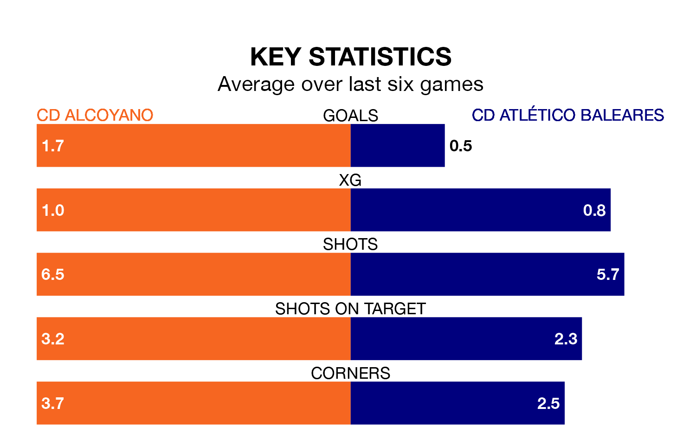

CD Alcoyano are heavy favourites to keep all three points at home in Sunday's early kick-off against CD Atlético Baleares.
Alcoyano, who sit ninth in Primera Division RFEF Group 2 with 28 games played, are priced at 1.4 to seal victory at Campo Municipal El Collao.
Sitting 10 places and 18 points behind them in the table, Atlético Baleares are 7.8 to win with *Betting Company*, while the draw is at 4.6.
Alcoyano are in mixed form in Primera Division RFEF Group 2, with three wins and a draw from their last six games.
With a win and five losses over that period, Atlético Baleares's form is much worse – they have taken three points from 18, compared to the home team's 10.
In the last 10 years, Alcoyano and Atlético Baleares have played each other on 15 occasions. Alcoyano won two of them, Atlético Baleares seven, and they drew six times.
On average, Alcoyano scored 0.7 goals and Atlético Baleares 1.1 in those matches.
Their last meeting was on December 3, when Atlético Baleares won 2-1 at home.
With 15 goals in 28 games so far this season, the visitors are the league's lowest scorers with 0.5 goals per game. And they are conceding more than average, letting in 47 goals at a rate of 1.7 per game.
Alcoyano, meanwhile, are average scorers, with 1.1 goals per game. They have conceded 1.0 goal per game.
In David Rodríguez Sánchez, Atlético Baleares have one of the league's most on-form strikers so far this season. He has notched seven goals in 18 appearances, to sit sixth in the scoring charts.
His goal rate of one every 210 minutes is quicker than that of Imanol García Lugea, Alcoyano's top scorer with a goal every 364 minutes, and a total of four goals in 21 games.
Alcoyano's last match was on March 16, a 3-1 win against Mérida AD, with Cristian Fernández Rodríguez, José Lara and Álvaro Vega Suárez getting the goals for Alcoyano.
Atlético Baleares lost 2-0 against San Fernando CD last time out, on March 17.
Updated: 10:19 (UTC), 22/03/24